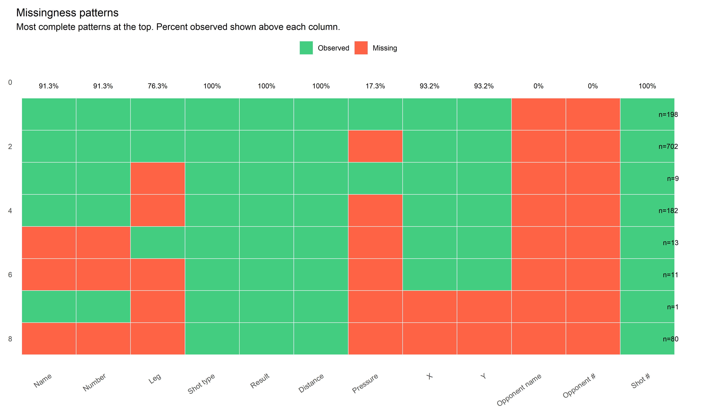
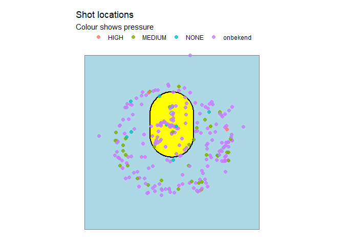
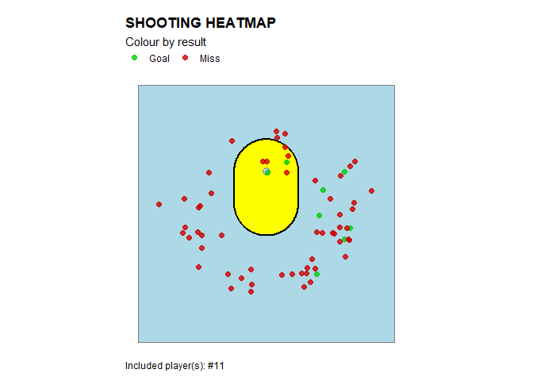
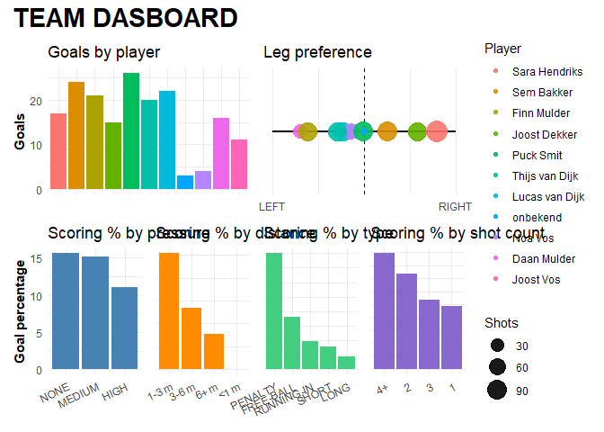
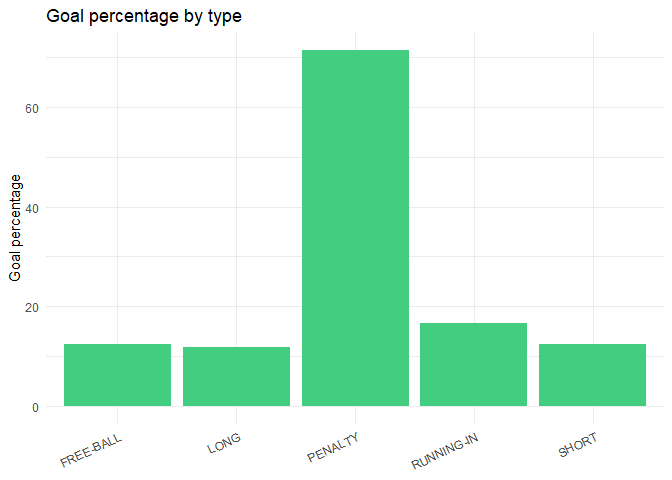

TagR helps you work with “tagged shots” from the popular TeamTV analysis platform, mainly used in korfball. It includes:
- Functions to tell you what information you miss.
- Various visualisations of tagged shots.
- Dashboards to compare and analyse teams and individual players at a glance.
Installation
You can install the development version of TagR from GitHub with:
# install.packages("pak")
pak::pak("EmmaDirk/TagR")Data format
TagR functions expect a TeamTV shot export with the same structure as the example dataset shipped with the package:
library(TagR)
str(shots, 1)
#> 'data.frame': 1196 obs. of 37 variables:
#> $ X : int 0 1 2 3 4 5 6 7 8 9 ...
#> $ sporting_event_id : chr "99d26597-de62-4b4d-8460-1ac4413c914b" "99d26597-de62-4b4d-8460-1ac4413c914b" "99d26597-de62-4b4d-8460-1ac4413c914b" "99d26597-de62-4b4d-8460-1ac4413c914b" ...
#> $ sporting_event_name : chr "PKC - DOS" "PKC - DOS" "PKC - DOS" "PKC - DOS" ...
#> $ sporting_event_scheduled_at: chr "2024-06-26 13:45:59.671166+00:00" "2026-11-29 02:40:56.514540+00:00" "2025-01-14 17:40:29.063786+00:00" "2024-01-23 18:51:03.476285+00:00" ...
#> $ observation_id : chr "f8ecebfe-e130-4c6f-bfb6-cffdfdd75dce" "6b0df560-ec7c-454e-8b43-f697eff11689" "cf9c3e9e-a464-4833-8a0d-554ce57131a9" "9ce1db60-218a-4791-bc6c-b49ae73c2eee" ...
#> $ clock_id : chr "R2" "R2" "R2" "R2" ...
#> $ start_time : int 2523 4270 388 1949 2844 4270 1619 2529 3702 2418 ...
#> $ end_time : int 2523 4270 388 1949 2844 4270 1619 2529 3702 2418 ...
#> $ code : chr "SHOT" "SHOT" "SHOT" "SHOT" ...
#> $ description : chr "Shot: MISS" "Shot: MISS" "Shot: MISS" "Shot: MISS" ...
#> $ possession_id : chr "99d26597-de62-4b4d-8460-1ac4413c914b:00000" "99d26597-de62-4b4d-8460-1ac4413c914b:00000" "99d26597-de62-4b4d-8460-1ac4413c914b:00000" "99d26597-de62-4b4d-8460-1ac4413c914b:00000" ...
#> $ team_id : chr "59a9d50c-b35c-4cc4-8af5-ec7edd2be840" "59a9d50c-b35c-4cc4-8af5-ec7edd2be840" "59a9d50c-b35c-4cc4-8af5-ec7edd2be840" "59a9d50c-b35c-4cc4-8af5-ec7edd2be840" ...
#> $ team_name : chr "Fortuna" "Fortuna" "Fortuna" "Fortuna" ...
#> $ team_ground : chr "home" "home" "home" "home" ...
#> $ position : chr "ATTACK" "ATTACK" "ATTACK" "ATTACK" ...
#> $ team_name_full : chr "Fortuna" "Fortuna" "Fortuna" "Fortuna" ...
#> $ team_key : chr "fortuna" "fortuna" "fortuna" "fortuna" ...
#> $ person_id : chr "ce3da71f-8020-4b9e-b3b7-3ddd1c287c14" "823dd5e8-c6de-4767-8abe-cfa121f569f6" "823dd5e8-c6de-4767-8abe-cfa121f569f6" "ce3da71f-8020-4b9e-b3b7-3ddd1c287c14" ...
#> $ first_name : chr "Joost" "Noa" "Noa" "Joost" ...
#> $ last_name : chr "Dekker" "Vos" "Vos" "Dekker" ...
#> $ number : chr "11" "1" "1" "11" ...
#> $ full_name : chr "Joost Dekker" "Noa Vos" "Noa Vos" "Joost Dekker" ...
#> $ leg : chr "LEFT" "onbekend" "LEFT" "LEFT" ...
#> $ type : chr "LONG" "RUNNING-IN" "SHORT" "LONG" ...
#> $ angle : num -148.1 46.9 155.2 -142.9 137.6 ...
#> $ result : chr "MISS" "MISS" "MISS" "MISS" ...
#> $ distance : num 6.4 2.4 5.4 5.7 5.2 5.7 7 5.7 5.6 5.2 ...
#> $ pressure : chr "MEDIUM" "NONE" "MEDIUM" "MEDIUM" ...
#> $ x : num 3.38 -1.75 -2.27 3.44 -3.51 ...
#> $ y : num -5.43 1.64 -4.9 -4.55 -3.84 ...
#> $ participantsPersonIds : logi NA NA NA NA NA NA ...
#> $ opponent_person_id : chr "onbekend" "onbekend" "onbekend" "onbekend" ...
#> $ opponent_first_name : chr "onbekend" "onbekend" "onbekend" "onbekend" ...
#> $ opponent_last_name : chr "onbekend" "onbekend" "onbekend" "onbekend" ...
#> $ opponent_number : chr "onbekend" "onbekend" "onbekend" "onbekend" ...
#> $ opponent_full_name : chr "onbekend" "onbekend" "onbekend" "onbekend" ...
#> $ shot_count : int 1 2 3 4 1 1 2 3 4 1 ...Missingness patterns
A quick way to see what information you have, and what information you have not yet recorded.
# example: plot missingness pattern for all shots
p <- tagr_plot_missingness(shots)
p
Shot visualisations by location
TagR includes visualisations of shot location, where various attributes of the shots can be mapped to colour.
# example: result-colored plot (GOAL vs MISS)
p <- tagr_heatmap(shots, colour_by = "result")
p
Like many other functions in this package, plotting functions accept an optional player argument (fuzzy match on name or exact match on number).
# example: plot shots for player number 11 only
p <- tagr_heatmap(shots, colour_by = "result", player = "11")
p
Included shots can also be filtered by type (e.g., exclude freeballs), result (i.e. goal or miss), pressure level and leg.
# example: plot right legged shots for player number 11 only
p <- tagr_heatmap(shots, colour_by = "result", player = "11", filter = list(leg = "RIGHT"))
p
Team dashboards
TagR provides quick overviews of team shooting performance across various attributes, including pressure, distance, shot type, leg, and shot count band. Ideal for coaches to get a quick sense of team performance and identify areas for improvement, or identify threats when preparing for upcoming opponents.
# example: team overview dashboard
p <- tagr_team_dashboad(shots)
p
Player dashboards
Or zoom in on individual players to see their shooting performance across various attributes, compared to the team average.
# example: player overview dashboard for player number 10
p <- tagr_player_dashboard(shots, player = "17")
p
Player analysis
TagR provides simple visualizations to show how scoring probability changes with:
-
distance(capped at 10 m) -
pressure(NONE < MEDIUM < HIGH) -
shot count band(1, 2, 3, 4+)
This can provide coaches with a simple way to view if players are struggling under pressure, or from longer distances.
# example: plot scoring probability by pressure for player number 10
p <- tagr_shot_analysis(shots, player = "10", feature = "pressure", add_team = TRUE)
p
where feature can also be "distance" or "shot_count_band". Multiple players can be added by passing a vector to the player argument:
# example: plot scoring probability by distance for player number 10
p <- tagr_shot_analysis(shots, player = c("10", "17"), feature = "distance", add_team = TRUE)
p